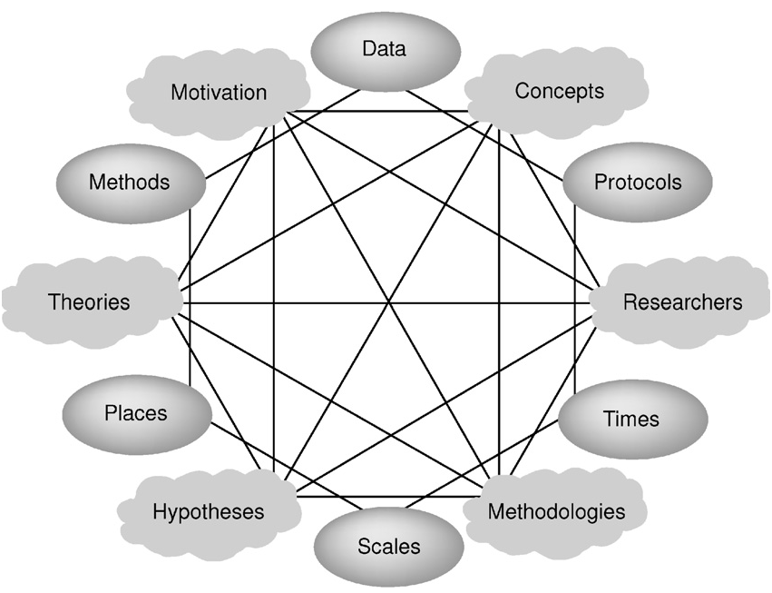

Gahegan and Pike's representation of the visible and typically expressed issues (as ovals) along with the implied--and typically difficult to express outside of narrative--issues that also serve to situate a piece of data.
The more I’ve become embedded in creating digital tools and objects, the more my scholarship languishes. I’d much prefer writing code or manipulating data to writing a paper about it or, so it seems, even reading a paper about it. But I’ve begun to catch up on all that reading, and just finished the excellent “A Situated Knowledge Representation of Geographical Information” by Mark Gahegan and William Pike. While directed at geospatial data, they highlight an issue growing ever more critical as scholars deal more and more with processed data: how to understand and express the effects of hidden productive and managerial factors on data. Or, as the authors put it:
In GIS and most other computational systems, the comprising datasets, methods, conceptual models and other resources are usually treated as objective entities. However, they were created for – and are applied to – specific situations that affect their objectivity in many ways. These situations are generally not captured or represented at all, except perhaps in the minds of the people involved in their creation and use, or after the fact in journal articles far removed from the actual processes of inquiry. And when data producers and data consumers do not share such situational knowledge, the chances of misunderstanding and misapplying resources increase.
If anyone is aware of other scholarship that explores this issue outside of the geospatial realm, I’d very much welcome a link.